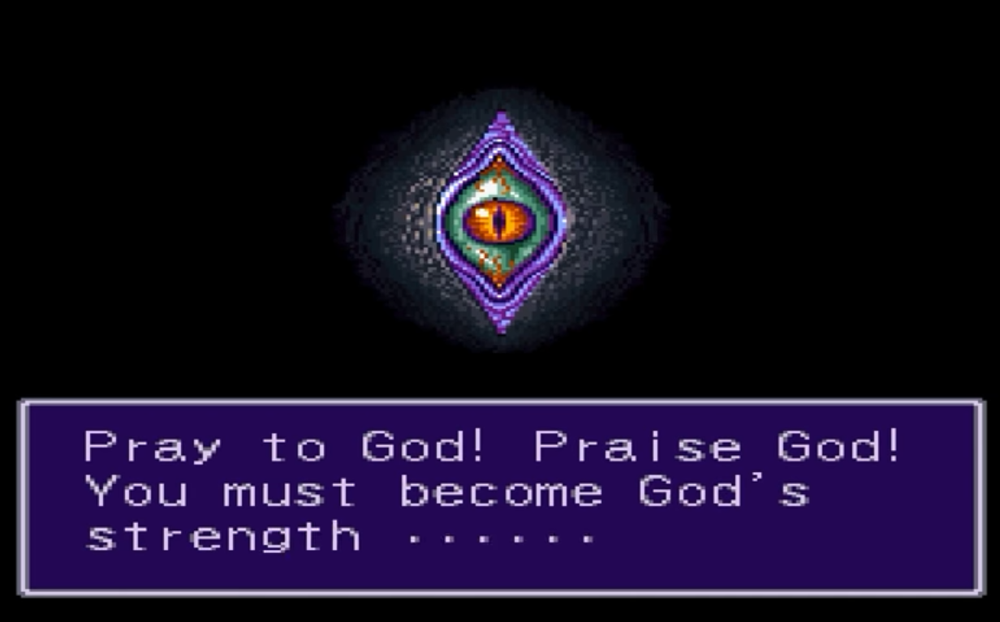
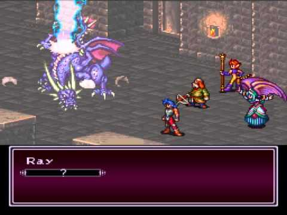

Breath of Fire II
Released in 1994 for the Super Nintendo, Breath of Fire 2 takes what the first game built and expands massively upon it in basically all aspects, such as story, visuals, and mechanics. It's not without its flaws, and the removing of a crucial item that allowed for no random encounters makes this game a slog to play through for a good portion of it. Despite this, if you're interested in experiencing an unique and engaging story, and seeing the noteworthy visuals it has to offer, you should play this game.
Gameplay
Everything from the basic gameplay of Breath of Fire 1 remains here, including the field abilities and mini games. The biggest addition is the
The encounter rate remains as high as in the first game, but it's a major annoyance in this case because they removed the item that entirely prevents random encounters(like Pokémon's Repel), and instead replaced it for one that "reduces" them, but barely has any effect. This makes this by far the most frustrating of the trilogy to play, considering gameplay only, although it excels in other aspects, such as:
Story
Disclaimer: The reason why this is the game with the biggest story section here is because I just finished it so I can write for it the longest, where as I've finished the other two a good while ago. Breath of Fire 3's story still better.
Breath of Fire 2 takes place around 500 years after its predecessor. A new religion that worships the so called "St. Eva" is rapidly spreading, and its church is gaining a lot of power and followers. The game opens with a cutscene of a sort of eye looking directly at you, telling you to become God's strength, and that God must rise. Ryu then wakes up, with his father Garner, the priest of the local Eva church, telling him to go after his sister. Ryu finds her sitting next to a dragon guarding a cave nearby. When Ryu goes back to the village, however, everyone there has forgotten about who he is, and his father and sister have disappeared. He is taken in by a strange man who has already replaced your father as the priest, but during the night he ends up fleeing with another orphan named Bosch. They take refugee in a cave, and find a huge scorpion-like demon, who tells Ryu he is the Fated Child, and wishes to see him grow, and then knocks out both of them.
There's a timeskip, and Ryu and Bosch are now members of a guild, and after a specific job, Bosch is involved in an incident and accused of stealing from a rich man in town. In reality, you know who the thief is, a girl who stumbled upon you as you were looking for Bosch. You help him take refugee in a house near the mountains, and proceed to try and find the real thief and prove Bosch's innocence.
From this point on, you visit several towns and find a lot of party members. In various scenarios you find out that the leaders of certain groups/owners of certain estabelishments are possessed by demons, which seem to have taken the corruption in them and expanded it where it's the only thing that drives them forward, which creates monsters in power. In a certain town you meet a member of the church called Ray, who helps you with a quest where you need to rescue different villages from a cave about to flood. Eventually, you find the thief, and go back to the first city. In there however, you find out that the man which the girl stole from is a demon like the others found before, and you and Bosch defeat him and finally clear his name.
Eventually, you manage to find a rebel group, lead by a Woren(tiger race) named Taiga(creative), who suspects the activities of the church of St. Eva. You help with the prepations to invade the Cathedral. There, the entire city is brainwashed and only listens to St. Eva's teachings and ways. The group infiltrates the church and listens in to one of Habaruku's speeches, who is the founder of the religion. Habaruku reveals that he found one of the rebellion's infiltrated agents, Claris, and is about to kill her, when Taiga charges him. Habaruku makes easy work of Taiga, killing both him and Claris, and climbs up the stairs to the top of the church.
The party follows him, and midway through the dungeon you find Ray, who transforms into a dragon, revealing he is of the dragon clan, just like Ryu. After defeated, he tells Ryu that he was raised by Habaruku and it's why he is a part of this religion and tried helping him in the first place. He asks Ryu to defeat him and make this world a place where religion can exist without being harmful or evil. In the end Habaruku manages to escape, but you find Ryu's father, Garner, having his force sucked by a weird contraption, which is revealed to be helping strengthen Habaruku's real God, Deathevan. Here, you can choose to either kill Garner, or attack the other enemies and free him. If you end up killing him, you're locked out of getting one of the endings, as this game has multiple.
After getting out of the Cathedral, the party makes its way to Ryu's hometown, Gate, where the dragon is still defending the cave. The priest reveals himself as Habaruku, having disguised himself all this time in order to try and kill the dragon who blocked the cave, since it wasn't allowing the demons inside and his Dark God to be free. The party defeats him, and the dragon tells Ryu that he must make a choice: either let the dragon keep blocking the cave, and not go after Deathevan, or go inside the cave and hunt him down. If you choose to let it go, the game ends right there, saying Deathevan soon managed to escape and wreck havoc in the world. If you choose to go down, you enter the game's final dungeon.
The party eventually gets through it, and finds the dragon clan hiding underground. Ryu is told that as the Fated Child, he is the only one able to open the gates and defeat Deathevan. The party progresses and finds the demon who defeated Ryu and Bosch as children. The party defeats him, and gets to the end, where they confront Deathevan and supposedly kill him.
Going back to the surface, Ryu is worried about the fight, and believes that Deathevan is not yet dead. Here, the game is divided once more, and depending on your actions you get one out of two endings. If you killed Garner or didn't get the Flying Township, Ryu transforms into a dragon just like his mother once did, and guards the cave, much to the despair of all his friends. If you did manage to save Garner and get the Flying Township, he will come in the last second, and block the cave in Ryu's stead, allowing him to live the rest of his life in his human form.
Shamans
 There are a total of 6 shamans you can find throughout the game. Here follows a list of them and where they can be found:
There are a total of 6 shamans you can find throughout the game. Here follows a list of them and where they can be found:
- Sanamo - the Fire Shaman | Found in Capitan
- Sesso - the Water Shaman | Found in the witch's tower
- Spoona - the Wind Shaman | Found in Sky Tower
- Saynie - the Holy Shaman | Found in Bando
- Sollo - the Earth Shaman | Found in Rand's hometown, she's the only missable Shaman
- Synne - the Devil Shaman | Found in the final dungeon
A fusion has 3 possibilities, as a character may: get a specific stat increase but change nothing in appearence, get a big increase indicated by a change in sprite color, or change forms entirely and get a big boost in multiple stats, among possibly other perks. As stating every possible combination would take too much time, here follows only the scenarios that fall under the third possibility:
- Lin fused with Synne: Her combat ability changes to "Keep", allowing her to charge attack for a turn and deal 200~300% of damage in the following turn, and she also gains the highest Attack and Vigor of any character.
- Nina fused with Spoona and Synne: Her combat ability changes to "Bnsh", allowing her to force enemies to flee any battle, and she also has a big increase in AP and Wisdom
- Bosch fused with Saynie: His combat ability changes to "Spry", allowing him to attack all enemies at once, although he can't crit in this form.
- Sten fused with Sanamo and Spoona: His combat ability changes to "Sweh", which allows him to switch a random encounter for another one in the game's list.
- Rand fused with Sollo and either Sesso, Saynie or Sanamo: His combat ability stays the same, but his stats change just like all the other characters' fusions.
- Tapeta fused with Saynie: His combat ability changes to "Chop", which allows him to charge for a turn and possibly deal 999 damage to all enemies on screen in the next one.
- Spar is a special case. It has three possible fusions:
- Spar fused with Sesso: Its combat ability is replaced with Spor, which attempts to cause sleep to all enemies, but has a chance to hit the party. Spar also becomes a cute magical girl in this form.
- Spar fused with Sollo: Its combat ability is replaced with Bud, which allows it to charge for a turn and then, for 4 rounds, Spar will attack twice at random enemies.
- Spar fused with Sanamo and Synne: Its ability is not replaced, but its stats change.